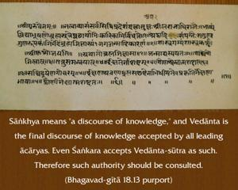

O mighty-armed Arjuna, according to the Vedānta there are five causes for the accomplishment of all action. Now learn of these from Me.

A question may be raised that since any activity performed must have some reaction, how is it that the person in Kṛṣṇa consciousness does not suffer or enjoy the reactions of work? The Lord is citing Vedānta philosophy to show how this is possible. He says that there are five causes for all activities, and for success in all activity one should consider these five causes. Sāṅkhya means the stock of knowledge, and Vedānta is the final stock of knowledge accepted by all leading ācāryas. Even Śaṅkara accepts Vedānta-sūtra as such. Therefore such authority should be consulted.
The ultimate control is invested in the Supersoul. As it is stated in the Bhagavad-gītā, sarvasya cāhaṁ hṛdi sanniviṣṭaḥ. He is engaging everyone in certain activities by reminding him of his past actions. And Kṛṣṇa conscious acts done under His direction from within yield no reaction, either in this life or in the life after death.